Allenati.
Registra.
Migliora.
ImberGym è il tuo diario di allenamento per palestra, casa e all’aperto: schede, esercizi animati, record e statistiche, più uscite GPS con Trackshow, alimentazione e integratori. Senza account, senza cloud: i tuoi dati restano sul telefono.
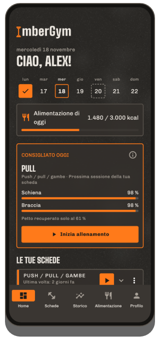
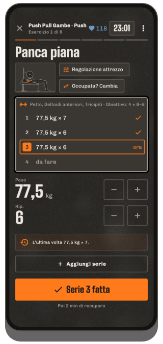
Tutto per allenarti.
In un unico posto.
Dalla prima serie all’escursione in montagna – ImberGym registra, calcola e ti mostra come migliorare.
Un esercizio.
Un obiettivo.
Valori dell’ultima volta già compilati, suggerimento di progressione, recupero anche sulla schermata di blocco.
La fotocamera
conta con te
Piegamenti, squat, plank – riconosciuti sul dispositivo, nessuna immagine lascia il telefono.
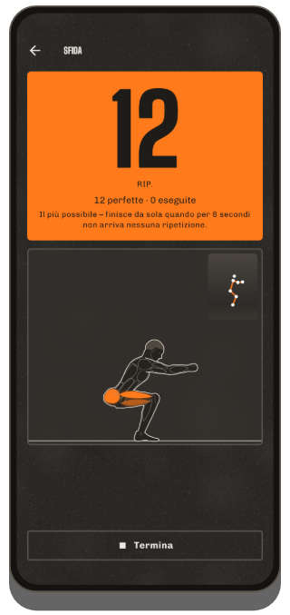
Record subito dopo la serie
Intervalli con annunci vocali – anche sull’orologio
Trackshow
Il tuo percorso GPS come volo sulle curve di livello – con i momenti salienti da condividere.
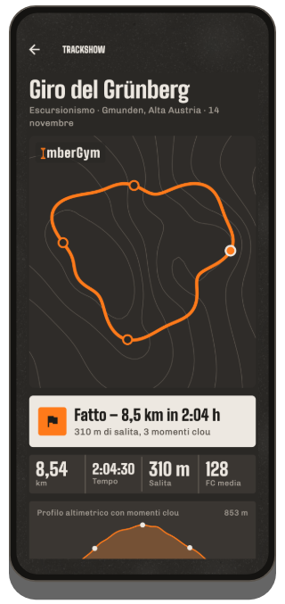
Mappa muscolare
e recupero
Guarda quali muscoli hai allenato – e quali sono di nuovo pronti.
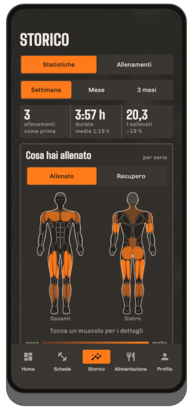
Cosa fa ImberGym
Tutto ciò che serve per allenarti – senza account, senza cloud.
Allenamento
Progressi
Corpo e alimentazione
E altro
ImberGym in immagini
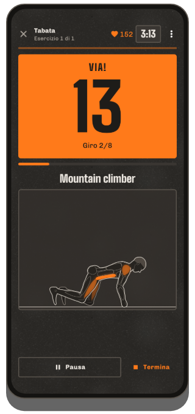
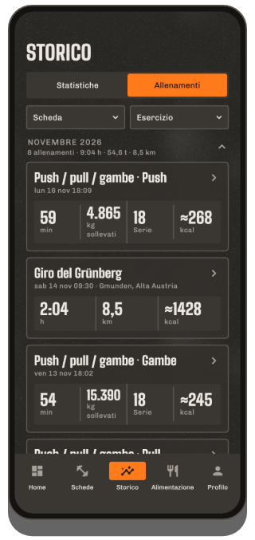
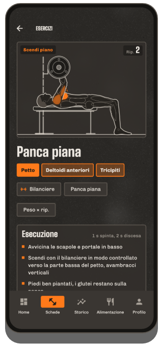
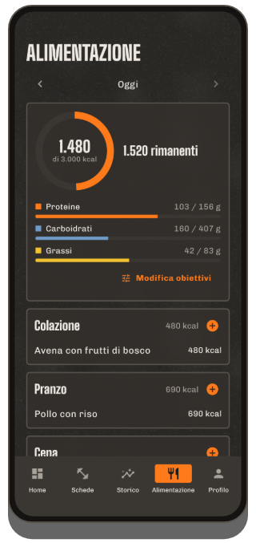
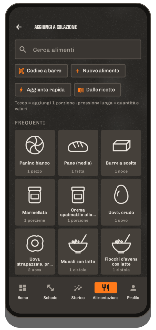
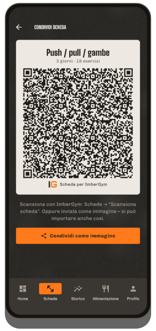
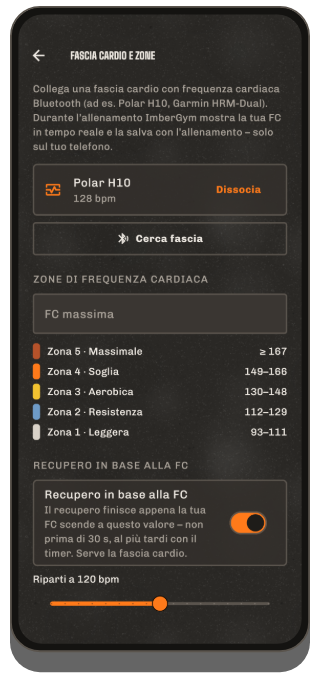
All’aperto
I tuoi dati.
Il tuo telefono.
Installa e parti – senza registrazione.
Tutto salvato sul dispositivo, backup come file.
Niente tracker, niente strumenti di analisi.
Gratis e Premium
Gratis
- Allenamenti completi con timer di recupero
- Fino a 5 schede e 5 esercizi personali, tutti i modelli
- Libreria esercizi con animazioni
- Storico, record, statistiche, riepilogo settimanale e annuale
- Battito dall’orologio tramite Health Connect, fascia cardio in tempo reale con zone e recupero in base al battito
- Integratori con promemoria, sfida con conta-ripetizioni dalla fotocamera
- Conta-calorie con catalogo alimenti e codice a barre, peso
- Passare schede con un QR code, condividere allenamenti come scheda grafica
Premium
- Schede ed esercizi personali illimitati, importare schede tramite QR code
- Mappa del corpo, recupero, andamento di grasso corporeo e peso
- Allenamento a intervalli (Tabata e altro)
- All’aperto con GPS, Trackshow in video
- App per l’orologio (Wear OS)
- Palestre, tessere, foto dei progressi
- Tutte le ricette, obiettivo calorico dinamico
Mensile, annuale o un unico pagamento a vita tramite Google Play – il prezzo attuale lo vedi nell’app. Prova gratuita di 7 giorni dopo il primo allenamento.
Disponibile su Google PlayDomande frequenti
Serve un account?
No. ImberGym funziona senza registrazione e senza un server proprio.
Dove vengono salvati i miei dati?
Solo sul tuo telefono. Niente cloud, niente pubblicità, niente analisi. Più dettagli nell’informativa sulla privacy.
L’app funziona offline?
Sì. Solo due cose usano internet: la ricerca di un codice a barre sconosciuto su Open Food Facts e il nome del luogo di un’uscita GPS (per questo il punto di partenza viene inviato al servizio di localizzazione di Android). Tutto il resto funziona offline.
Come arriva in ImberGym il battito del mio orologio?
Tramite Health Connect, l’archivio dei dati sulla salute di Android. Nell’app del tuo orologio attiva Health Connect e consenti «Frequenza cardiaca»: lo fanno tra le altre Samsung Health, Garmin Connect, Fitbit, Polar Flow, Withings e Zepp (Amazfit). Poi tocca «Carica FC dall’orologio» nei dettagli dell’allenamento in ImberGym. Huawei: Huawei Health non scrive in Health Connect; l’app «Health Sync» (Play Store) può trasferire i dati: origine Huawei Health, destinazione Health Connect, seleziona «Frequenza cardiaca». Consiglio: avvia un allenamento anche sull’orologio, così misura in continuo.
Quali fasce cardio funzionano?
Qualsiasi fascia cardio Bluetooth con il profilo standard di frequenza cardiaca, ad es. Polar H9/H10, Garmin HRM-Dual o Wahoo TICKR. Associala una volta nel profilo, in «Fascia cardio e zone»: poi si collega da sola a ogni allenamento.
Come condivido una scheda?
Nell’editor della scheda tocca l’icona QR e mostra il codice o invialo come immagine. L’altra persona lo scansiona nella scheda «Schede» con «Scansiona scheda», anche da un’immagine. Tutta la scheda è nel codice, non viene caricato niente online.
Nuovo telefono: cosa succede ai miei dati?
Nel profilo, in «Dati e backup», crea un backup e salvalo ad es. su Google Drive. Sul nuovo telefono scegli «Nuovo telefono? Ripristina un backup» nella prima schermata.
Vengo da Strong o Hevy: posso portare i miei allenamenti?
Sì. Importa l’esportazione CSV della tua vecchia app in «Dati e backup» → «Importa allenamenti». ImberGym abbina gli esercizi e mostra prima un’anteprima.
Le mie foto dei progressi vengono caricate online?
No. Sono salvate in una cartella privata dell’app, non compaiono nella galleria e sono escluse persino dai backup di Android.
Posso nascondere l’alimentazione?
Sì. Tutta la sezione si disattiva nel profilo: ImberGym resta un puro diario di allenamento.
Come elimino i miei dati?
Le singole voci direttamente nell’app; tutto insieme disinstallando l’app.